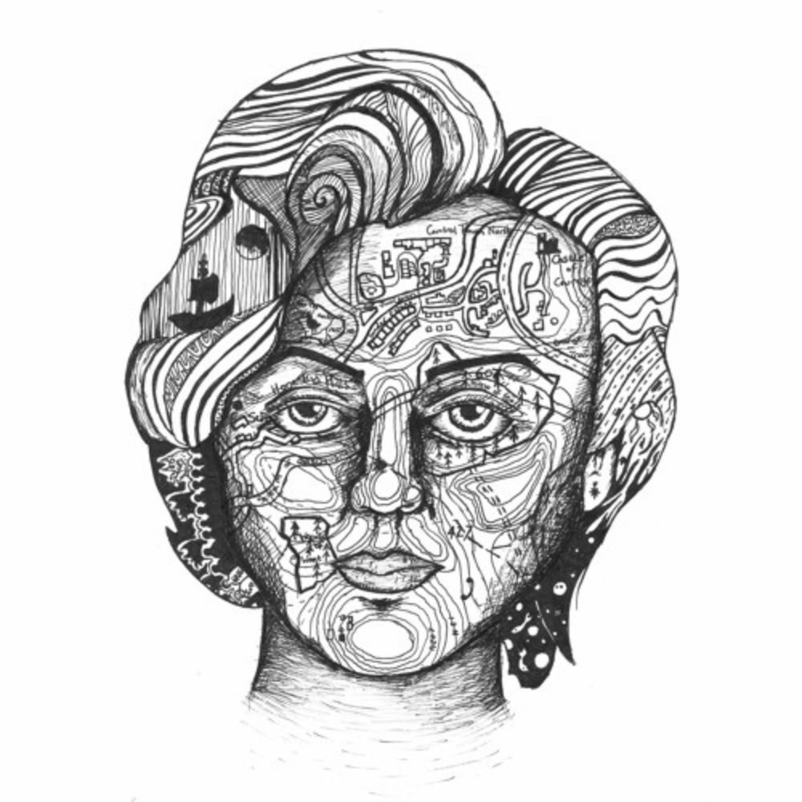

CONTOURS
KING COMPASS

For the EP Contours by King Compass - my six piece dream-folk band.
The project was short-lived and well loved, with unique shows in just-as-unique venues,
such as a sold-out EP launch in basement space designed as a cave, a stage at Sonisphere festival
and a Sofar Sounds set overlooking London.
The concept for the EP was around self-discovery and reflecting over others, with that
being represented with a map on a face. The piece is made simply with fineline ink.